Gardien 15
 Hervé Koffi
Royale Union Saint-G
27 m · 2 355 min
Farid Ouédraogo
Al-Hilal Omdurman
7 m · 594 min
Kilian Nikiema
ADO Den Haag
7 m · 585 min
Ladji Brahima Sanou
Burkina Faso
3 m · 270 min
Moussa Traoré
Burkina Faso
1 m · 90 min
Aboubacar Sawadogo
Rail Club de Kadiogo
1 m · 16 min
Clovis Bazemo
Africa Sports Nation
1 m · 6 min
Hervé Koffi
Royale Union Saint-G
27 m · 2 355 min
Farid Ouédraogo
Al-Hilal Omdurman
7 m · 594 min
Kilian Nikiema
ADO Den Haag
7 m · 585 min
Ladji Brahima Sanou
Burkina Faso
3 m · 270 min
Moussa Traoré
Burkina Faso
1 m · 90 min
Aboubacar Sawadogo
Rail Club de Kadiogo
1 m · 16 min
Clovis Bazemo
Africa Sports Nation
1 m · 6 min
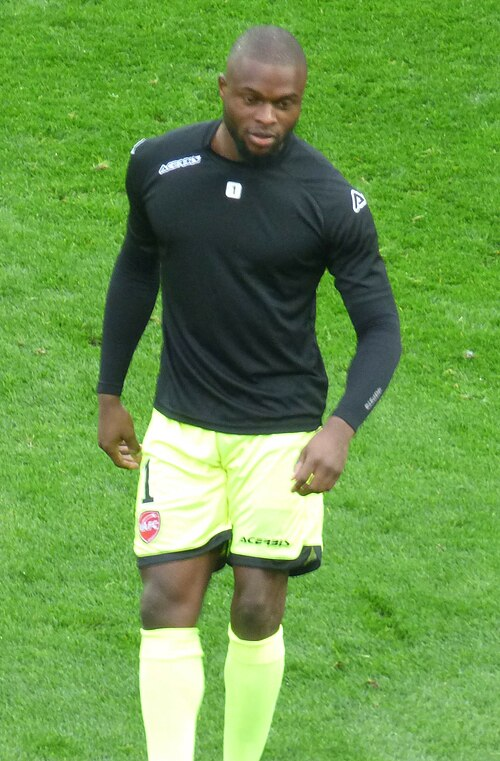
Hillel Konaté Troyes 0 m · 0 min Koula Sébastien Tou USL Dunkerque 2 0 m · 0 min Mathieu Konvelbo Rahimo FC 0 m · 0 min Mohamed Zegue Traore AS Douanes 0 m · 0 min Nampe Salifou Coulibaly Salitas FC 0 m · 0 min Nourdine Balora — 0 m · 0 min Philippe Mare — 0 m · 0 min Sebas Koula USL Dunkerque 2 0 m · 0 minDéfenseur 39
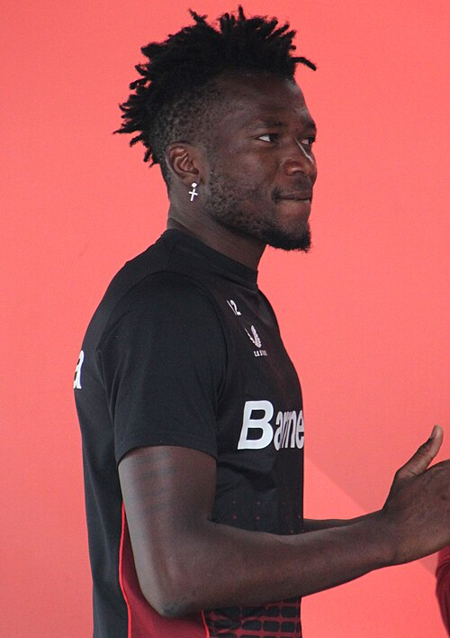
Edmond Tapsoba Bayer 04 Leverkusen 33 m · 2 985 min Issa Kaboré
Manchester City
29 m · 2 517 min
Issa Kaboré
Manchester City
29 m · 2 517 min
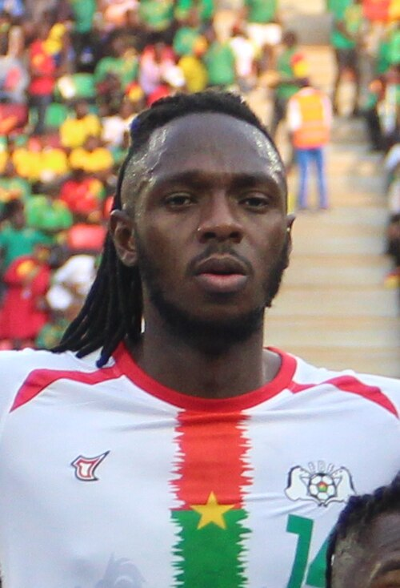
Issoufou Dayo Umm-Salal SC 28 m · 2 463 min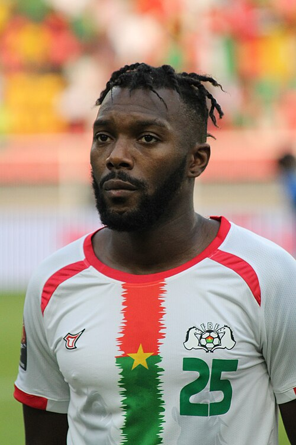
Steeve Yago Aris Limassol 29 m · 2 330 min Saïdou Simporé Al Faisaly SC 19 m · 1 105 min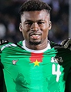
Adamo Nagalo PSV Eindhoven 14 m · 953 min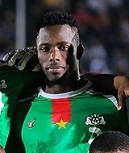
Abdoul Guiebre Ascoli 7 m · 602 min Arsène Kouassi Lorient 6 m · 538 min Mohamed Ouédraogo Olympique Lyonnais 8 m · 525 min Nasser Djiga
Wolverhampton
7 m · 478 min
Nasser Djiga
Wolverhampton
7 m · 478 min
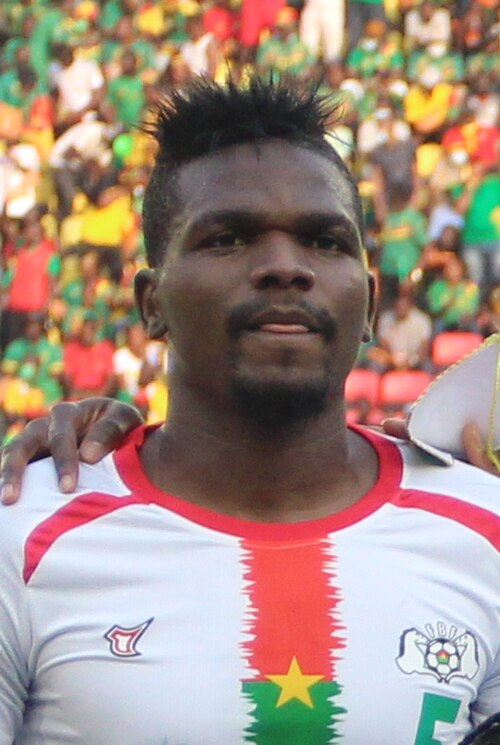
Patrick Malo Hassania Agadir 4 m · 315 min Soumaïla Ouattara Raja Club Athletic 3 m · 302 min Moumoune Diallo — 3 m · 225 min Mohamed Guira AS Sonabel 2 m · 180 min Frank Tologo — 2 m · 167 min Abdoul Ayinde KAA Gent Reserve U23 2 m · 164 min Hanaby Hadalou Sagne AS Douanes 2 m · 135 min Trova Boni Al Ahly Benghazi 5 m · 129 min Valentin Nouma TRA United SC 3 m · 99 min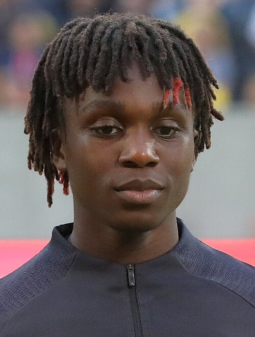
Arthur Zagré FC Utrecht 1 m · 90 min Christophe Ouattara Rahimo FC 1 m · 90 min Pakwo Gnanou Burkina Faso 1 m · 45 min Mohamed Ali Yabré ASEC Mimosas 1 m · 12 min Cheick Omar Ouedraogo Stade d'Abidjan 0 m · 0 min Cyril Dao National Bank of Egy 0 m · 0 min Dao Cyrille National Bank of Egy 0 m · 0 min Dylan Ouédraogo Krasava ENY 0 m · 0 min Enock Belem — 0 m · 0 min Hassane Rachid Traoré USFA 0 m · 0 min Hassane Traoré FCV Farul Constanța 0 m · 0 min Hermann Nikiema Rail Club de Kadiogo 0 m · 0 min Ismaëlo Ganiou RC Lens 0 m · 0 min Issouf Sosso — 0 m · 0 min Nassim Innocenti FK Jablonec 0 m · 0 min Oula Abass Traoré Horoya 0 m · 0 min Oula Traoré AS Douanes 0 m · 0 min Rachide Gnanou IF Gnistan 0 m · 0 min Somgogna Hermann Nikiema Rail Club de Kadiogo 0 m · 0 min Souleymane Massa Ouattara — 0 m · 0 minMilieu 33
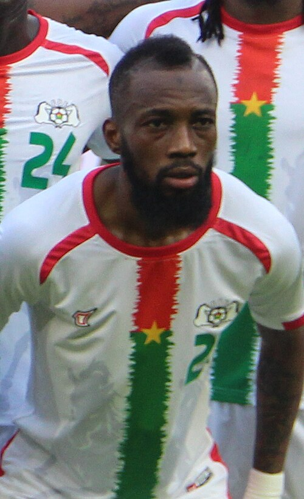
Blati Touré Al Ahli Tripoli 29 m · 2 272 min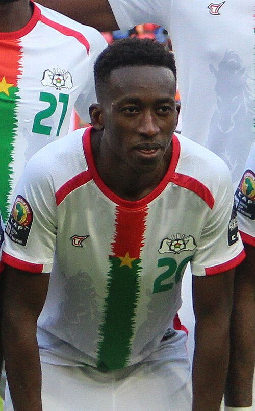
Gustavo Sangaré FC Noah 22 m · 1 595 min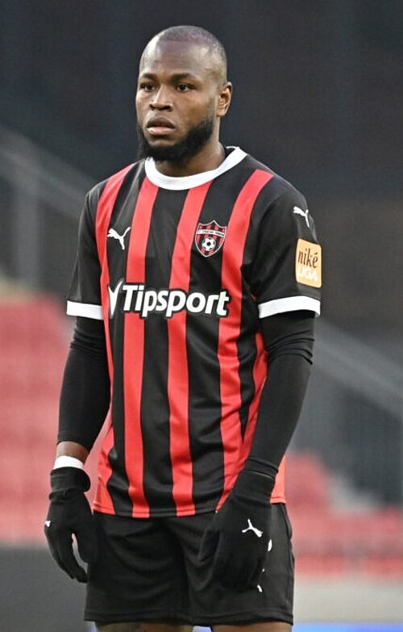
Cedric Badolo Sumqayıt FK 21 m · 1 167 min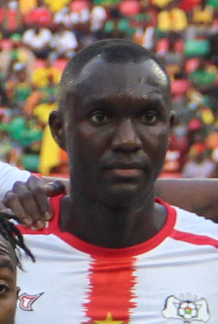
Adama Guira Racing Rioja 12 m · 1 049 min Ismahila Ouédraogo Odense Boldklub 15 m · 955 min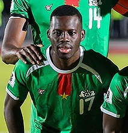
Stephane Aziz Ki Al Ittihad SC 14 m · 675 min Sacha Bansé SpVgg Greuther Fürth 9 m · 607 min Josué Tiendrébéogo FK IMT Beograd 9 m · 483 min Mohamed Zougrana MC Alger 7 m · 434 min Kalifa Nikiema AS Douanes 3 m · 225 min Tertius Bagré CS Sfaxien 4 m · 210 min Abdoul Bandaogo UD Yugo Socuéllamos 2 m · 180 min Josaphat Ouattara — 2 m · 179 min Ousmane Siry ASF Bobo Dioulasso 3 m · 168 min Aliou Chitou Adjibadé — 3 m · 142 min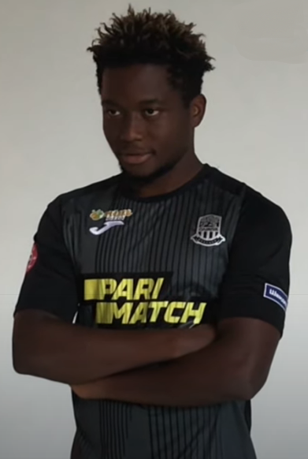
Dramane Salou Urartu 5 m · 141 min Souleymane Sangaré Al Taawon Ajdabiya S 4 m · 137 min Raouf Memel Dao APR FC 1 m · 90 min Cédric Barro — 1 m · 74 min Lohann Doucet Vitória SC 1 m · 70 min Abdoul Yoda Milsami Orhei 1 m · 44 min Clement Pitroipa Maniema Union 1 m · 15 min Aboubacar Bassinga UD Las Palmas 1 m · 2 min Dramane Nikièma AS Douanes 1 m · 1 min Abdul Meyker Yabre — 0 m · 0 min Abou Ouattara Džiugas Telšiai 0 m · 0 min Aboubacar Sidiki Traore CF Mounana 0 m · 0 min Alla Franck Alain Kanté Burkina Faso 0 m · 0 min Bryan Dabo — 0 m · 0 min Dramane Kambou FC Saint-Éloi Lupopo 0 m · 0 min Ibrahim Bancé Marumo Gallants FC 0 m · 0 min Jean Fiacre Kouamé Botué Inter Turku 0 m · 0 min Ridouanou Maiga — 0 m · 0 minAttaquant 39
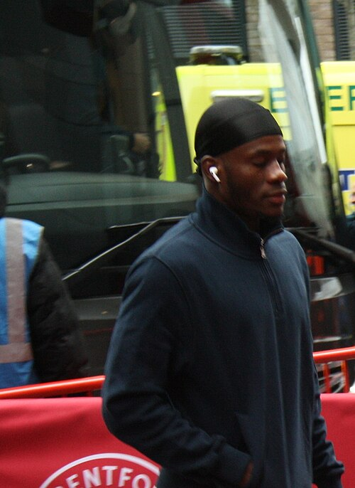
Dango Ouattara Brentford 28 m · 2 120 min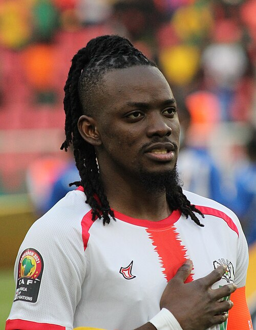
Bertrand Traoré Unattached 25 m · 1 663 min Hassane Bandé Mechelen 23 m · 1 226 min Mohamed Konaté Akhmat Grozny 24 m · 1 119 min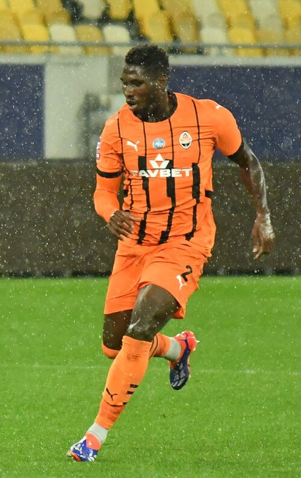
Lassina Traoré Shakhtar Donetsk 15 m · 924 min Abdoul Tapsoba
Radomiak Radom
15 m · 587 min
Abdoul Tapsoba
Radomiak Radom
15 m · 587 min
 Cyrille Bayala
Dalian Kuncheng City
9 m · 586 min
Cyriaque Irié
SC Freiburg
7 m · 354 min
Cyrille Bayala
Dalian Kuncheng City
9 m · 586 min
Cyriaque Irié
SC Freiburg
7 m · 354 min
 Georgi Minoungou
Colorado Rapids
9 m · 334 min
Georgi Minoungou
Colorado Rapids
9 m · 334 min
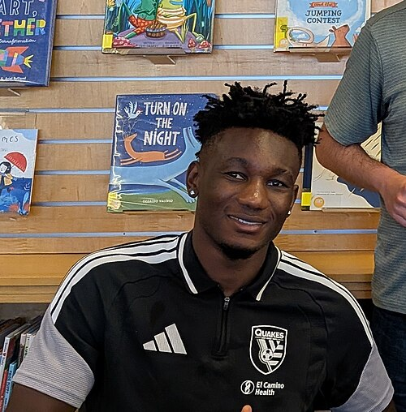
Ousseni Bouda San Jose Earthquakes 10 m · 279 min Papus Ouattara Vitesse FC 4 m · 268 min Abdoul Baguian — 4 m · 237 min Pierre Landry Kaboré Heart of Midlothian 8 m · 232 min Djibril Ouattara APR FC 5 m · 230 min Yves Koutiama Kenya Police 4 m · 198 min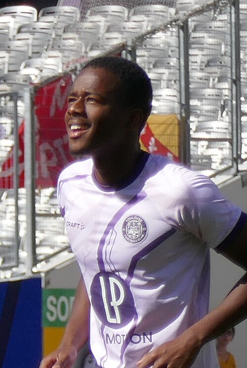
Mamady Bangré Grenoble Foot 38 4 m · 163 min Ousmane Camara RFC Liège 5 m · 162 min Abdoul Kader Ouattara Cercle Brugge 3 m · 149 min Issouf Kaboré Al-Hilal Omdurman 3 m · 132 min Abdoulaye Toure — 2 m · 131 min Romain Lougoutiogue AS Sonabel 2 m · 131 min Zakaria Sanogo AS Douanes 5 m · 131 min Damassi Konaté AS Mangasport 1 m · 47 min Eric Traoré Pyramids 1 m · 23 min Hamed Blakiss Ouattara — 1 m · 11 min Hassim Traore — 1 m · 10 min Jack Diarra Espérance Sportive D 1 m · 7 min Abdel Rachid Zagré Ravenna 0 m · 0 min Adolphe Belem — 0 m · 0 min Elohim Kaboré Hammarby 0 m · 0 min Faissal Zangre Amarante FC 0 m · 0 min Fayçal Konaté MFK Karviná 0 m · 0 min Honoré Ye Andranik 0 m · 0 min Ismaël Seone Haugesund 0 m · 0 min Joffrey Bazié Bastia 2 0 m · 0 min Kouamé Botué Inter Turku 0 m · 0 min Mohamed Ouattara — 0 m · 0 min Moise Kaboré SK Beveren 0 m · 0 min Regis Ndo — 0 m · 0 min? 3
Tableau détaillé
Tableau complet, triable colonne par colonne : minutes, buts, passes, dribbles, arrêts, note moyenne, club et valeur estimée.